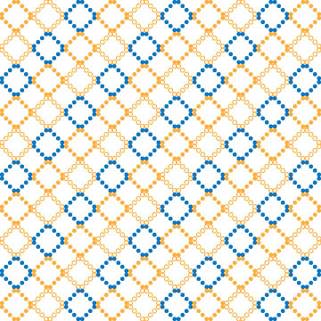
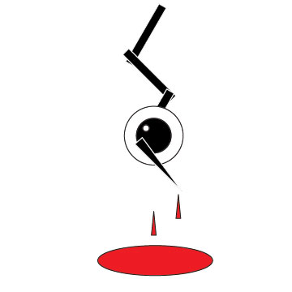
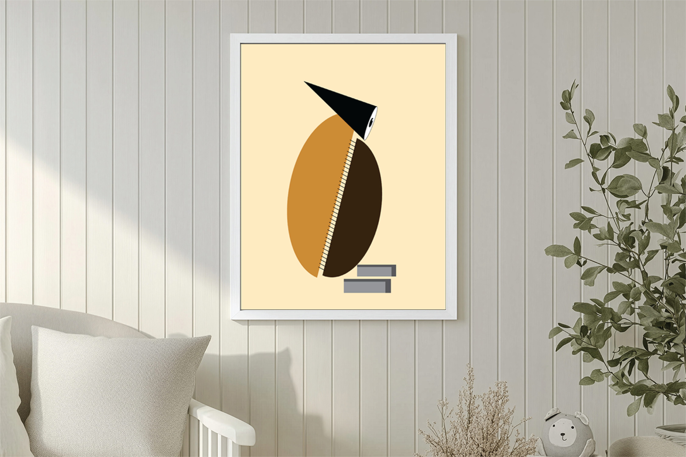

Geometric Pattern
This is a simple geometric pattern that I created for use on business cards.

Blood Eye Design
This is a more simple design that I created for a class assignment focused on major and minor focal points.

Geometric L - Death Note
This is a geometric interpretation of L from Death Note, designed as standalone artwork.